卒業生の声
お子さま本人の言葉と、お母さまの言葉。どちらもそのまま掲載しています。
10万人に1人の病気。それでも、私の挑戦は終わらない
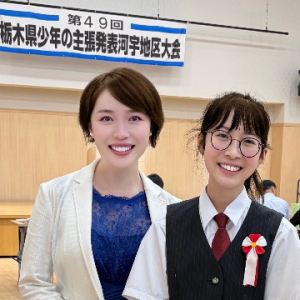
少年の主張学校代表・地区大会出場
金原エマさん中3
私は小学5年生で10万人に1人といわれる病気になり、後遺症のある生活になりました。
当たり前にできていたことが、一夜にしてできなくなり、不安な毎日でした。
それでも夢や挑戦をあきらめたくありません。
自立塾は私の居場所で、「一人じゃないよ」と潤子先生が声をかけてくれました。
病気になったからこそ、フォーラムや当事者会での登壇、ラジオ出演など、新しい挑戦にもつながりました。
これからも笑顔で毎日を過ごせる未来を信じて歩んでいきます。
『待っていたよ、おかえり』――あの一言が、私たち親子を救ってくれた
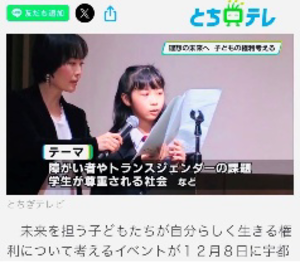
Yahooニュース全国版掲載 とちテレ出演
母・金原麻弓様お母さま
事情があり、自立塾をお休みしておりました。
その間も私たち親子に寄り添い、「待っていたよ、おかえり」と温かく迎えてくださいました。
その一言にどれほど救われたかわかりません。
娘は11歳で病気を発症し、多くのものを失いましたが、それ以上に多くの出会いと学びを得ました。
2年前におこなわれたフォーラムで潤子先生と出会い、右手が思うように動かない娘が、自ら登壇発表のお手伝いを潤子先生にお願いしたことがご縁の始まりです。
このご縁と、自立塾という温かな居場所に心から感謝しています。
人と話す事が得意になった。
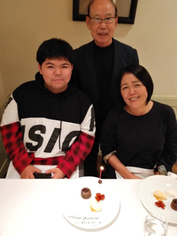
室田 響紀高3
小4から自立塾に入りました。
一斉クラスも、個別クラスも受けていますが、特に個別クラスは一斉クラスの情報量の3倍はあります。
しかも、予備校や進学塾では教えてもらえない情報ばかりで、令和の時代に何が必要なのかをしっかり指導してくれます。
個別だと、人によって教えてもらえる内容が違うのも、魅力です。
例えば、世界情勢やお金の教育そして、就職活動の最前線をたっぷり話してくれます。
私が自立塾に入って変わった事は、人と話す事が得意になった事です。
なぜなら、ここは授業で全員が毎回話すので楽しみながら、苦手意識が無くなったからです！
母・室田 祥子様お母さま
小4の頃、体験授業を受けてロビーで待つ私に、目をキラキラさせて「オレ、やりたい！来月も来たい！」と言ったのを今でも鮮明に覚えています。
それまでは集団での作業がとても苦手な子で、学校での授業参観に行っても、イスをガタガタさせ、前を向く事なく授業だけが進んでいくばかりでした。
もしかしたらこの子は、多動性障害ではと心配していたのですが、自立塾に入ってからは（もう少し動いてもいいのでは）と思う位、どっしりと落ち着いています。
親から見て変わったと思う所は、自分から発信する事が多くなった所です。
自ら「中学受験をしたい」との言葉も、成長してくれていると嬉しく思いました。
最後に。何よりも感じる事は、市川先生が大好きで、塾の仲間も大好きで、毎回塾が楽しそうな事ですね。
県選抜代表者として知事と対談・プレゼン・ラジオ出演しました！

寺井ゆい中1
私は中学１年から妹と自立塾の一斉クラスに入り、私は個別クラスにも入っています。
一斉クラスでは、学校では教えてもらえないようなお金の話や世界情勢、そして人とのコミュニケーション等について学んでいます。
個別クラスでは、人間関係について相談した時、具体的なアドバイスをいただきました。
市川先生のアドバイスのおかげで今では人間関係で悩んでいた学校生活が楽しくなってきています。
市川先生はいつも私の意見を尊重し味方でいてくれて、的確なアドバイスをくださいます。
また、県選抜代表者としてプレゼンのステージに立つ機会をいただき、県知事と対談したり、ラジオに出演するという貴重な経験をさせていただきました。
そして、プレゼンの仕方や工夫などを市川先生にご指導いただくこともできたため、今後のプレゼンに活かしていきたいです。
これからも大好きな自立塾で学びながら、様々なことにチャレンジし成長していきたいです！
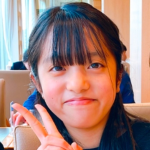
寺井レナ小5
私は自立塾の一斉クラスに入ってから、自分の意見をまとめて相手に伝える力がつきました。
なぜかというと、授業には「無茶振りは人を育てるコーナー」というものがあって、それが私にとって特訓になっているからです。
そして授業では初めて聞く言葉がたくさんあり、学校では学べない日本や世界について教えてくれます。
難しい言葉はわかりやすく説明してくれるので、安心して授業が受けられます。
市川先生はいつも明るく面白くて、私たちが楽しく学べるようにしてくれてるので、私はそんな自立塾が大好きです！
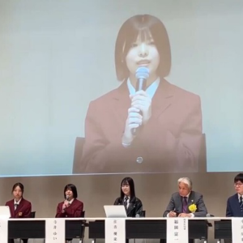
寺井多江子様お母さま
市川先生の講演会をきっかけに自立塾のことを知りました。
そこでは、市川先生の子育てや教育に対する熱意にとても共感し、中学１年と小学５年の娘を一斉クラスと個別クラスに入塾させました。
広い視野で世界情勢や世の中のこと、そしてこれからの時代を生きる上で大事なことを、分かりやすくユーモアをもって子供たちに教えてくださり、娘二人はいつも笑顔で授業を受けています。
また自分の意見を伝えたり、一緒に授業を受けている生徒皆さんの考えを知ることができるので、柔軟性あるコミュニケーションを実践的に学ぶことができます。
個別クラスでは、友達関係で悩んでいた娘に寄り添って親身に相談に乗っていただきました。
そのおかげで今では前向きに楽しく学校生活を送るまでに成長している娘の姿をみると、「まさに自立塾だな」と実感しております。
その他にプレゼン出場やラジオ出演といったなかなかできない貴重な機会をいただき、市川先生には大変感謝しております。
今後も自立塾を通して娘二人が成長し自立していく姿が楽しみです！
一つの留学が、僕の『世界の見方』を変えた
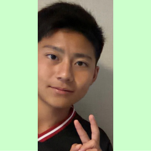
髙島秀翔くん高2
市川先生には、海外留学選抜試験でご尽力頂きました。
試験には、プレゼンテーションの探求テーマが児童福祉だったので、長らく自立塾で活動されているご経験と、そこから感じている課題について丁寧に教えて頂きました。
お話を伺っていく中で、自分の中での価値観や考え方が変わりました。
また、これから大人になっていく上で大切なことや、今の社会のお話も沢山してくださり、とても勉強になりました。
留学でのプレゼンもうまく出来、見事合格する事が出来ました。
先生、ありがとうございました！！
息子の合格より、私が嬉しかった『もう一つの成長』
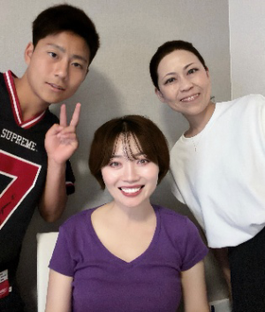
母・髙島恵子様お母さま
私が市川さんと初めてお会いしたのは、国連JACEの広報官として、職場にお越し頂いた時でした。
その後、息子がトビタテ留学に応募する際、児童福祉についての探求活動でお話を伺いました。
質問に丁寧に答えてくださるだけではなく、これから生きていく上で本当に大切なことを息子に真剣に伝えてくださいました。
その言葉は、彼の心に深く響き、価値観や物事の捉え方にも大きな変化をもたらしました。
お力添えのお陰で、プレゼンテーションもより深い内容となり、見事採用が決まりました。
息子にとって大きな学びと、成長の機会を与えてくださった事に心より感謝しています。
本当にありがとうございました。
学校の先生たちから【内面が非常に大人になった！】と褒められます。
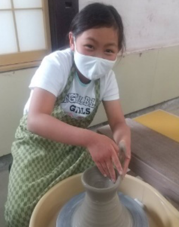
渡辺 紗希小4
学校では教えてもらえない世界中の最新情報を、自立塾では教えてくれます。
人との話し方や聞き方、それに伝え方まで沢山教えてくれます。
共働きで私のお母さんは残業もあり、とても忙しいのですが学童の帰り道の車の中で、私は自立塾のオンライン授業を、必死に受けています。
大人になるために必要なアドバイスをもらえるから、入って良かったな！と思いました。
だって、安心して大人になれるからです。
母・渡辺 圭以子様お母さま
入塾後の変化として2点、驚いております。
1点目が、道徳の授業のご報告を小学校の先生から鼻息荒く、頂きました。何と「非常に頼りにしています！」との事。娘が積極的に意見しているのです。
2点目が、私が学校へ伺うとすれ違う先生方皆様に、どの先生からも娘の事で「どうしたの？紗希ちゃん、内面が非常に大人になってきましたよ！！」と言われるので、本当に驚いています。
一人親だからこそ、自立塾に出会えて良かった！
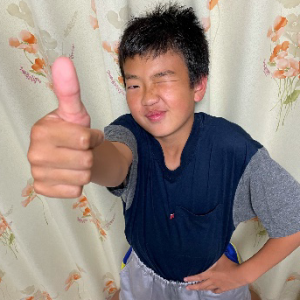
菊地 昊汰中2
「株」は危険だと思っていましたが、自立塾のお金の授業を聞いてからは考えが変わり、今では株の本など読んでいます。
人を巻き込むコミュニケーションの授業が面白くて、しかも大人になっても使えるし、とにかく楽しかったです！
学校の国語の授業でも、まとめる力がついてきたのを実感しています。
実は、理系に進みたいのですがICTスキルを極めて、社員が困っている時にはサポート側にまわり、リーダーシップ力を発揮出来る社会人になります。
その夢を、自立塾で学び続けてかなえます。
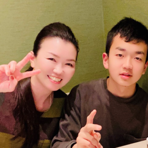
母・菊地 由記子様お母さま
潤子先生の教えを昊汰が、真剣に学び授業後には、私に沢山話してくれます。
本人の夢が叶う日を、楽しみにしております。
ZOOMのオンライン授業も、自立塾は世間よりもいち早く取り入れて下さって驚きました。
本人が順応したのも、Wでびっくりしました。
入塾するまでは自分の気持ちを伝えられなかった、言葉のボキャブラリーが少なかった子だったのですが、それが激変しました！
学校では教えてくれない事、それをとことん学ぶ探究心も嬉しいです。
私ではとても教えてあげられない内容ばかりで感謝しております。
人生設計を具体的に描ける様になりました。
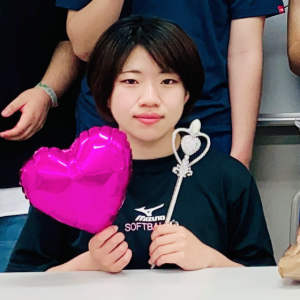
和田 咲良北里大学
金銭教育を受けさせて頂いた事で、人生設計を具体的に描ける様になりました。
そして就活の相談も個別指導でしているのですが、投資家でもある潤子先生が、各企業の株価のチャートを解説しながら、丁寧に教えてくれるので非常に勉強になります。
進学塾や予備校では、聞けない話ばかりです。
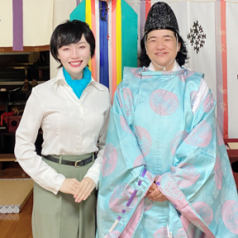
母・和田 宏子様お母さま
自立塾に入る前の娘は、正直【人に興味がない子】でした。
個別クラスと一斉クラスの両方をお世話になってからは、周囲から「咲良ちゃん、変わったね！」「どうした？」とよく言われ、親族一同、誠に驚いております。
見た目だけではなく、コミュニケーションの取り方も、そして何より明るくなりました。
更に、輪の中に入れない子がいたら自ら声を掛けたり人として大切な事を、自立塾で学び成長しているのがよく分かります。
市川先生についてですが、最初にお会いした時からとても親しみやすく（先生に対して失礼ですね）、安心して娘をお任せできると感じました。
また、その授業ごとに予告、報告を頂き、どんな事をしているのかがよくわかり、また娘からも報告を受けるようになり、親の私も勉強をしている様です。
市川先生のお陰で、学校教育、家庭教育では得られない数々の事を身につけている様です。
ですからこれから数年後、立派な社会人になれる事を心から、願うばかりです。
社会のことが理解出来た！
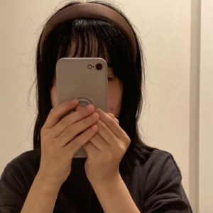
池上 名月小5
入る前の自分は、社会の事は考えていませんでしたが、自立塾に入ってからは社会の事を考えたり、ニュースで言っている事が理解出来るようになりました。
未来のことを考えられるようになった！
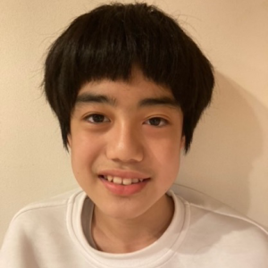
Iくん中1
僕は自立塾に入るまで、未来の事・社会の事を全く考えていませんでした。でも、ここに入ってからは変わりました。それらを考える様になったのです。大人になるまでに何が大切なのか、よくわかりました！
活躍している先輩たち
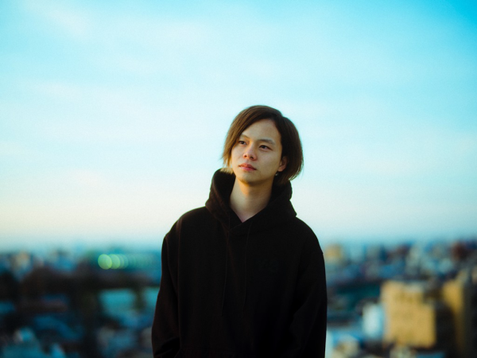
- Forbes Japan「世界を変える３０人」に決定・掲載！！
- TVCM ドミノピザ・チュッパチャプス等制作
- 株式会社リチカ様の8億円資金調達達成 PR戦略担当
- 株式会社yutori PRESS＆CreativePlanner担当
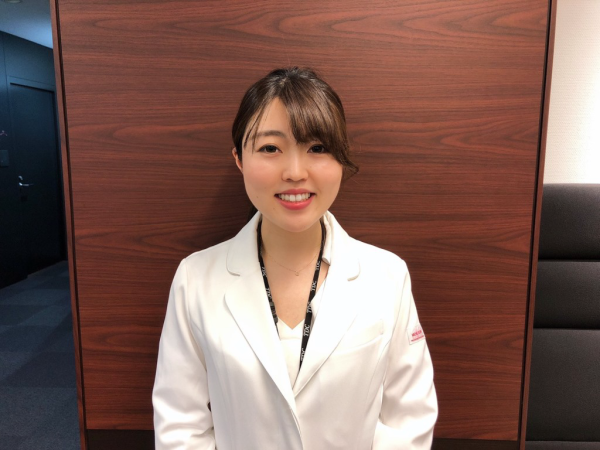
- 東京歯科大附属病院勤務
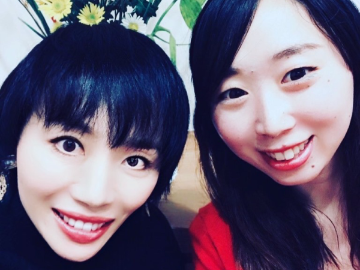
- 神奈川県公立小学校勤務
右側ご本人、左側塾長
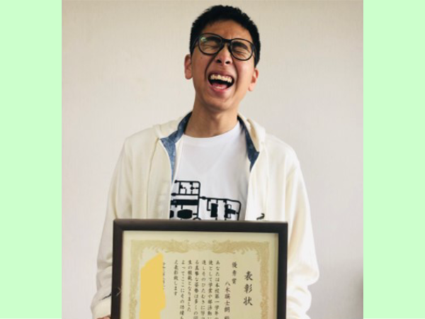
- 祝！不登校からV字回復！プレゼンで受賞！
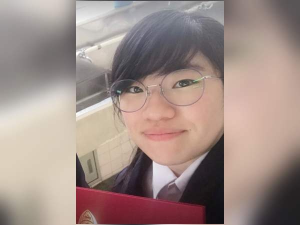
- 当塾に18歳でオンラインビジネス起業クラスを習得＋臨床検査技師として活躍中！
- お金の教育を個別指導で学習中
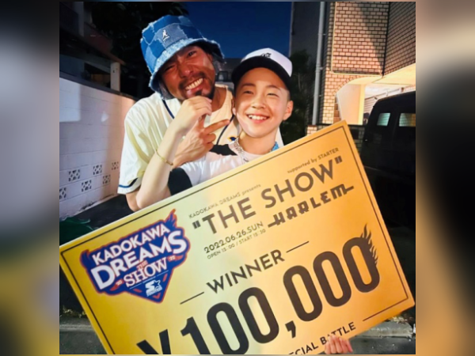
- 紅白歌合戦出場歌手のPV出演
- TVの朝生番組で全国区出演
- 吉本興業ダンスコンテスト優勝、他多数優勝
本人談：「潤ちゃん、まじ神！だってオレの気持ちわかってくれたから。絶対に悩みがある人は、潤ちゃんに聞いてもらった方がいい！オレはそれで、自分に自信がついたから」
あなたの一歩が、
気になることを、まずは話してみてください。お子さまのこと、ご家庭のこと、これからのこと。
無理におすすめすることはありません。どうぞお気軽にご連絡ください。